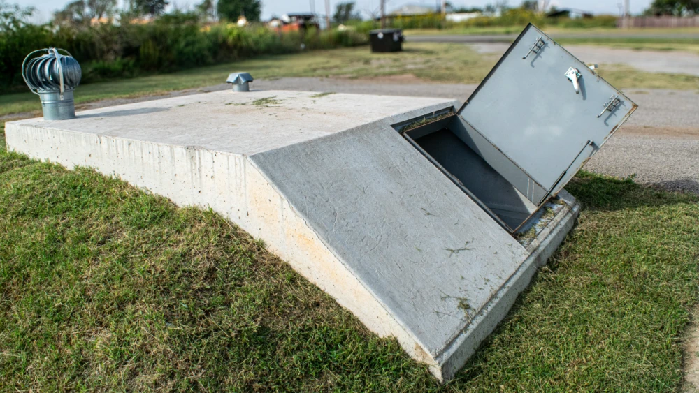

Finding Shelter
Finding safe shelter is one of the first priorities during an emergency. Choose a location that protects you from the immediate danger, such as falling debris, fire, flooding, extreme weather, or contaminated air.

How to Choose a Safe Location
Move away from windows and exterior doors when severe weather is approaching. In a tornado, use a small interior room on the lowest level. During a flood, move to higher ground and never enter moving water.
If officials advise you to shelter in place, stay indoors, close windows and doors, and follow local emergency alerts. Keep a flashlight, water, first-aid supplies, and a charged phone nearby.
Before You Leave
Only evacuate when authorities tell you to leave or when remaining is more dangerous. Take your emergency kit, use the recommended route, and let someone know where you are going. Do not return until officials say it is safe.